Gergeme ve Şammas (Sabbas) Pir Kilisesi
Kayseri’nin tarihi ilçesi Bünyan’da yer alan Gergeme köyü, Bünyan’ın batı kısmında, sarkıtlı büyük bir kaya bloğunun yamacına kurulmuştur.
Köye literatürde Kerkeme adı ile de rastlanmaktadır.
Köyde Bizans (hatta Roma) izleri bulunmaktadır.
Köyün en yüksek noktasında, muhtarın deyişiyle 40 odalı bir kilise ve hamam yer almaktadır, bu kilise bugün koruma altına alınmıştır.
Kilisenin 13. yüzyılda yapıldığı sanılmakta ve adı Şammas Pir olarak bilinmektedir.
Bu kilisenin Talas’ta 439 tarihinde doğan Sabbas the Sanctified adlı rahip adına inşa edildiği bazı kaynaklarda geçmektedir.
Kilisenin içerisinden çıkan kitabe aşağıda yer almaktadır.
Bu kitabe, Yunan alfabesi ile yazılmış Türkçe bir metin içermektedir. Birebir aşağıdaki metin yazmaktadır:
“Sene bin sekiz yüz doksan dokuzda
Yapılmıştır Manastır’da bu oda
Neftçi Abraham Ağa’nın hayratı
Peder zikrin daim etsin gayreti
Otur burada et duayı eda
Pederi Sabbas’a rahmetsin Hüda
Kayseri’den”
Kaynak: Seyit Burhanettin Akbaş (İnternetten alıntılanmıştır.)
Köyün içerisinde tarihi çok eskiye dayanan iki camii yer almaktadır.
Köyde üç değirmenin kalıntıları hala ayaktadır Bezir, un ve bulgur değirmenleri.
Köyde şu anda 10 hane aktif yaşamını sürdürmektedir, büyük oranda terkedilmiştir.
Köyün 30 yıllık muhtarı olan Ahmet Turan ile mutlaka tanışmanızı tavsiye ederim.
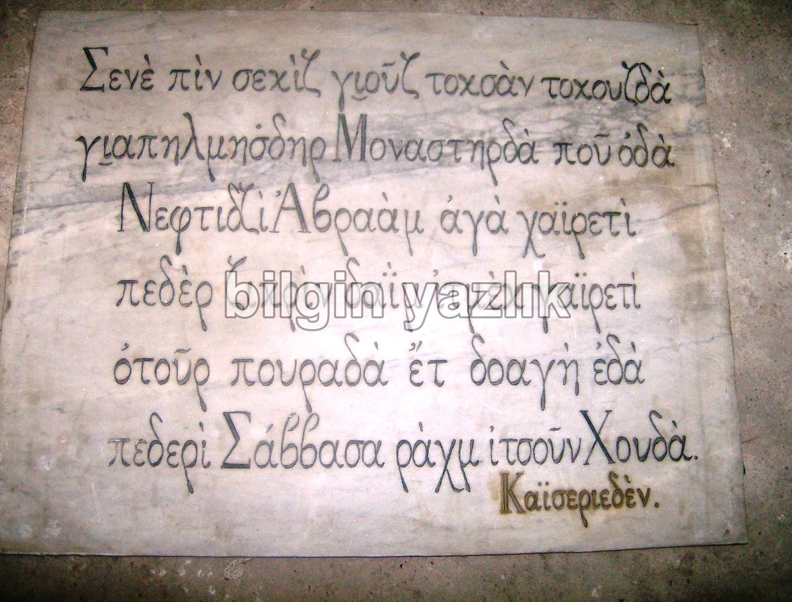
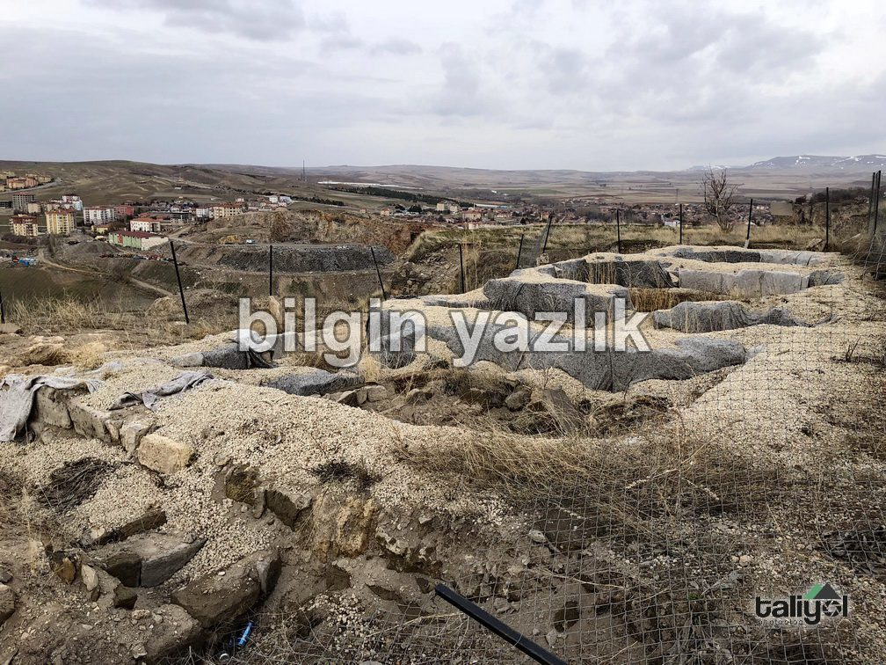
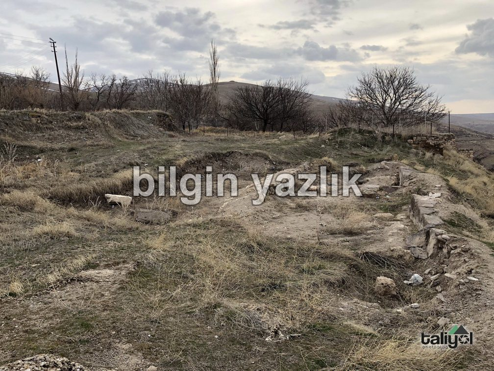
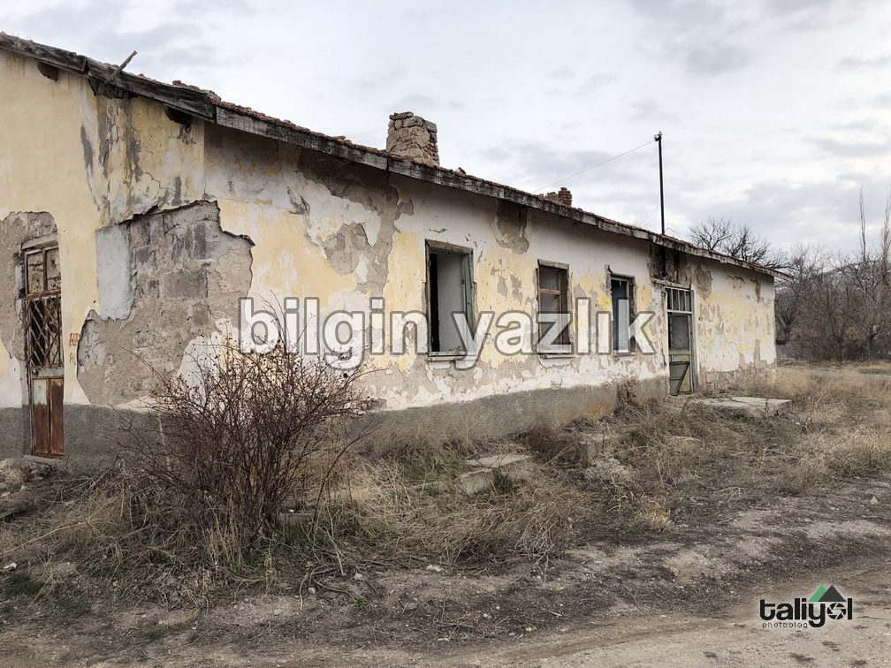
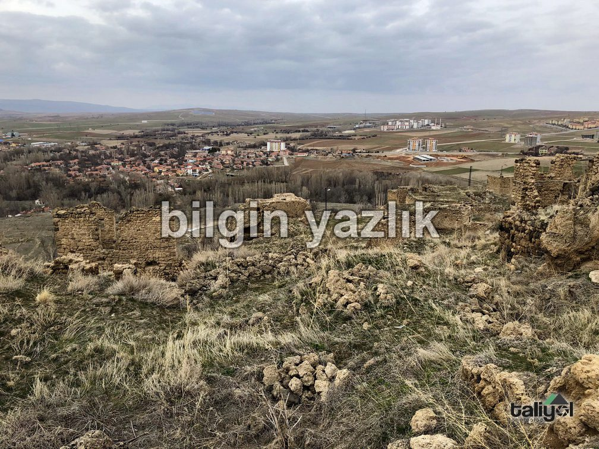
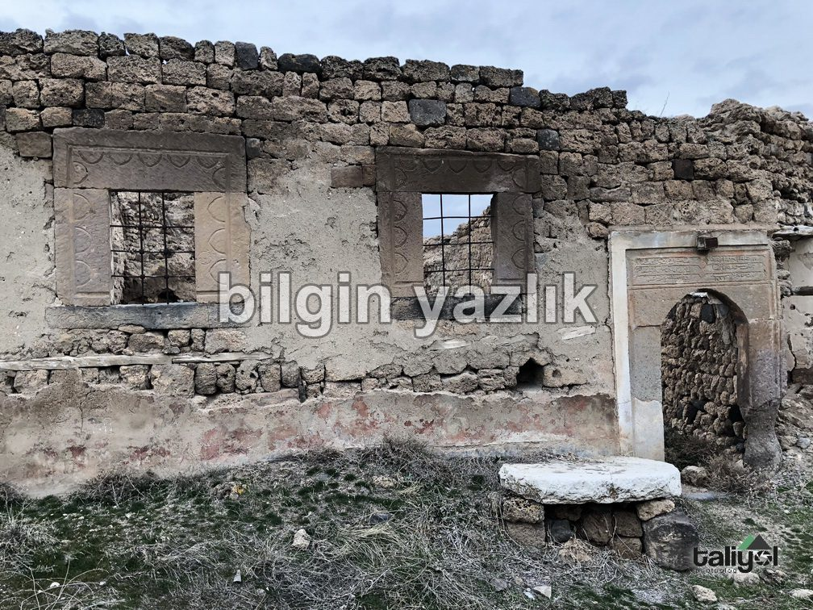
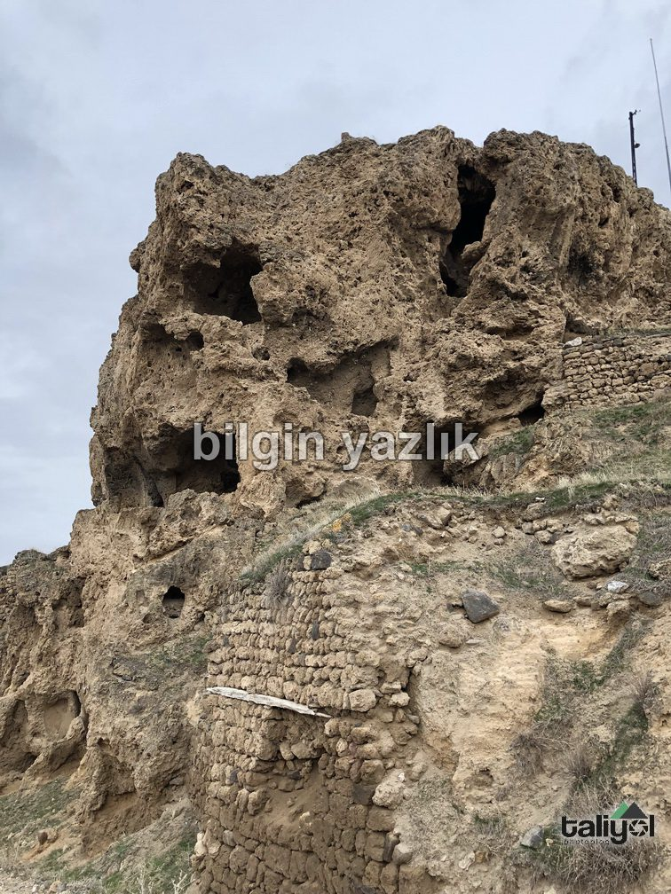
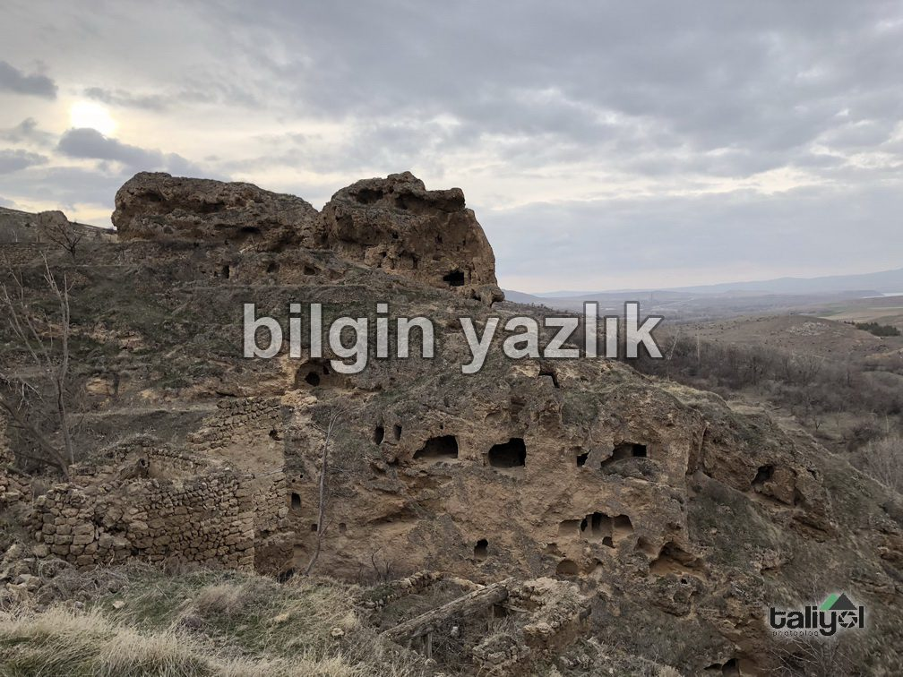
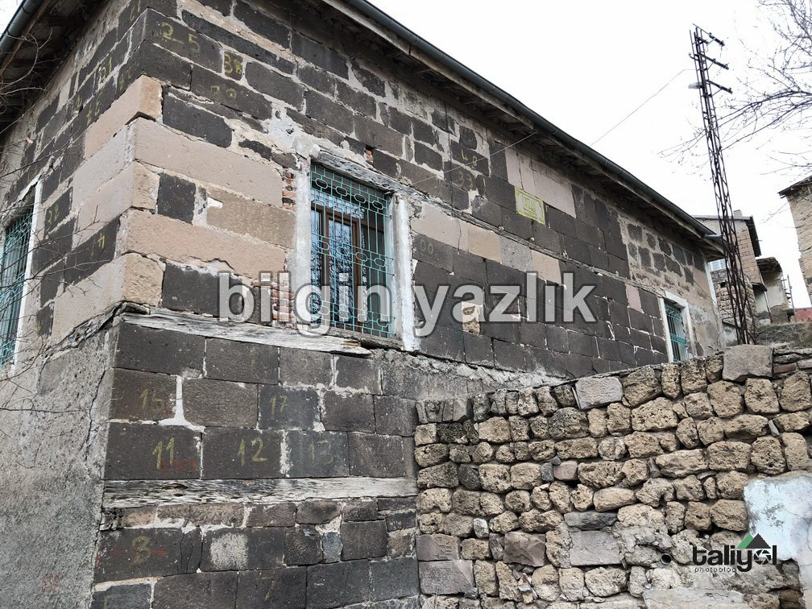
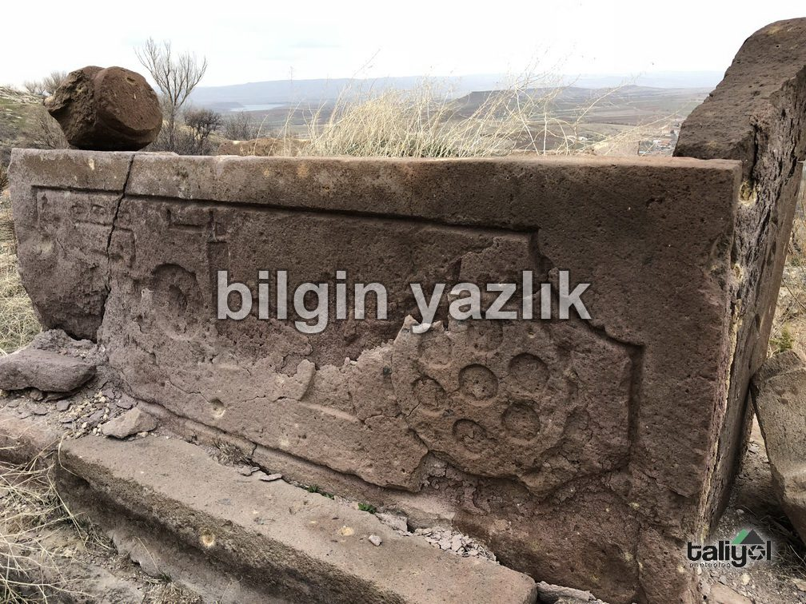
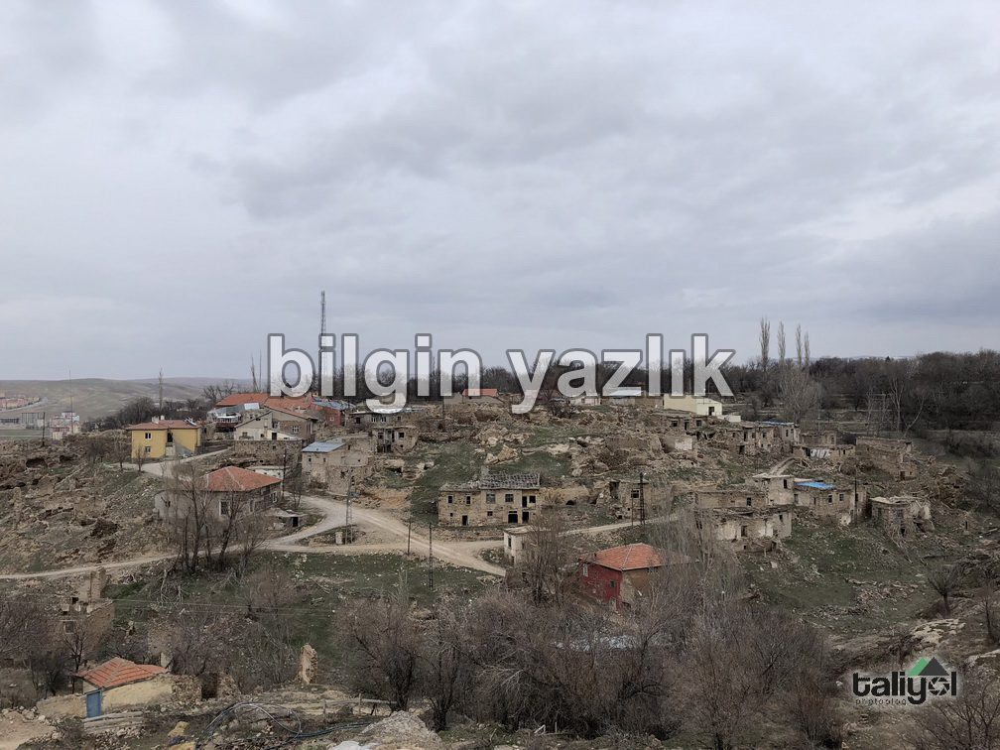
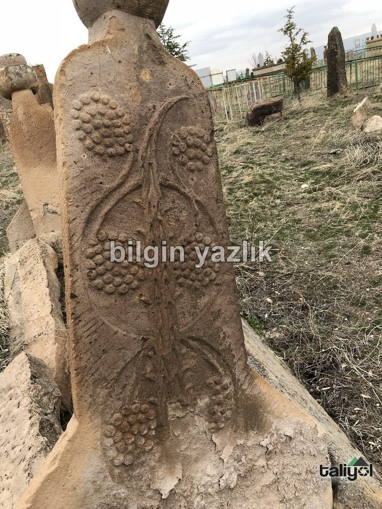
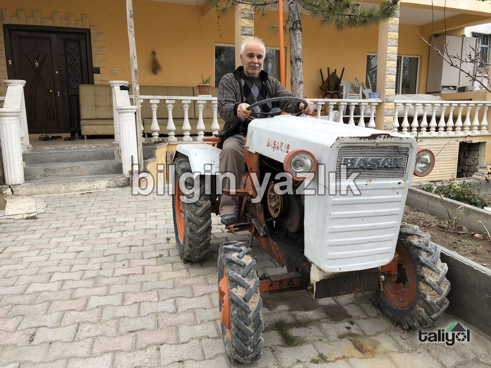
Bu yazı taliyol arşivinden taşınmıştır. · özgün kayıt